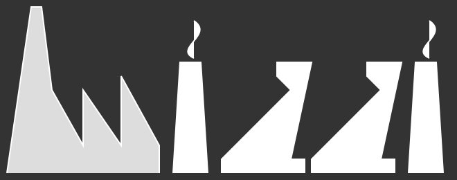

<!doctype html>
<html VERSION-5="5" VERSION-4="4" version="5">
<head>
    <link href="https://fonts.googleapis.com/css?family=Roboto" rel="stylesheet" />
    <link href="sanitize.css" rel="stylesheet" />
    <link href="../styles/main.css" rel="stylesheet" />
    <link href="../styles/documentation-plugins.css" rel="stylesheet" />
</head>
<body class="Documentation-plugins">
    <!-- top navigation markup -->
    <input type="checkbox" id="tn-input-toggle" />
    <nav class="tn-bar">
        <nav class="tn-main">
            <a href="index.html.ittf"><div class="logo">
                
            </div>
            </a>
            <label for="tn-input-toggle" class="tn-label-toggle"></label>
            <label for="tn-input-toggle" class="tn-label-toggle-close">&times;</label>
            <ul>
                <li><a href="../concepts.html">Concepts</a>
                </li>
                <li class="tn-pageSelected"><a href="../docs/intro.html">Documentation</a>
                <nav class="tn-subPages_mobile">
                    <ul>
                        <li><a href="../docs/intro.html">intro</a>
                        </li>
                        <li><a href="../docs/ittf.html">ittf</a>
                        </li>
                        <li><a href="../docs/jswizzi.html">jswizzi</a>
                        </li>
                        <li><a href="../docs/models.html">models</a>
                        </li>
                        <li><a href="../docs/artifacts.html">artifacts</a>
                        </li>
                        <li><a href="../docs/jobs.html">jobs</a>
                        </li>
                        <li><a href="../docs/plugins.html">plugins</a>
                        </li>
                    </ul>
                </nav>
                </li>
                <li><a href="../api.html">Api</a>
                </li>
                <li><a href="../code/intro.html">Code</a>
                </li>
                <li><a href="../starters.html">Starters</a>
                </li>
                <li><a href="../project.html">Project</a>
                </li>
            </ul>
        </nav>
        <nav class="tn-subPages">
            <ul>
                <li><a href="../docs/intro.html">intro</a>
                </li>
                <li><a href="../docs/ittf.html">ittf</a>
                </li>
                <li><a href="../docs/jswizzi.html">jswizzi</a>
                </li>
                <li><a href="../docs/models.html">models</a>
                </li>
                <li><a href="../docs/artifacts.html">artifacts</a>
                </li>
                <li><a href="../docs/jobs.html">jobs</a>
                </li>
                <li class="tn-subPageSelected"><a href="../docs/plugins.html">plugins</a>
                </li>
            </ul>
        </nav>
    </nav>
    <!-- main content markup -->
    <main id="mc-wrapper" class="mc-wrapper-layout-sub">
        <input type="checkbox" id="mc-toggle-toc" />
        <input type="checkbox" id="mc-toggle-toc-close" onchange="mc_toggle_toc_Close()" />
        <div class="mc-frame">
            <div class="mc-frame-bar">
                <h1 class="mc-sidebar-left-title">plugins</h1>
                <h1>
                    <label for="mc-toggle-toc-close" class="mc-label-toggle-close">&times;</label>
                </h1>
            </div>
            <nav class="mc-sidebar-left">
                <ul>
                    <li><a href="#concept-intro" class="mc-item-link">Introduction</a>
                    <label for="mc-toggle-concept-intro" class="mc-label-toggle">Introduction</label>
                    </li>
                    <li><a href="#concept-1" class="mc-item-link">Plugins</a>
                    <label for="mc-toggle-concept-1" class="mc-label-toggle">&nbsp; Plugins</label>
                    </li>
                    <li><a href="#concept-2" class="mc-item-link">Plugin management</a>
                    <label for="mc-toggle-concept-2" class="mc-label-toggle">&nbsp; Plugin management</label>
                    </li>
                    <li><a href="#concept-3" class="mc-item-link">wizzi-plugin.factoryPlugin API</a>
                    <label for="mc-toggle-concept-3" class="mc-label-toggle">&nbsp; wizzi-plugin.factoryPlugin API</label>
                    </li>
                </ul>
            </nav>
            <div class="mc-content">
                <div>
                    <input type="checkbox" id="mc-toggle-concept-intro" onchange="m_toggleChanged()" />
                    <input type="checkbox" id="mc-toggle-concept-1" onchange="m_toggleChanged()" />
                    <input type="checkbox" id="mc-toggle-concept-2" onchange="m_toggleChanged()" />
                    <input type="checkbox" id="mc-toggle-concept-3" onchange="m_toggleChanged()" />
                    <h1 class="mc-content-title" id="concept-intro">plugins</h1>
                    <div class="mc-pane mc-pane-concept-intro">
                        <div class="summary"></div>
                    </div>
                    <div class="mc-pane mc-pane-concept-1">
                        <h2 id="concept-1">Plugins</h2>
                        <div class="summary">
                            <p>The wizzi factory is a generation framework implemented by plugins.</p><p>Kernel modules themself have a pluggable architecture. The wizzi-mtree package is a plugin that implements an api for building tree structures from documents. Repositories of source ittf documents are plugins that implement an api for locating and retrieving documents.</p><p>A wizzi plugin exposes its resources to the wizzi factory:</p><ul>    <li>schema definitions;    </li><li>wizzi models and their factories;    </li><li>model transformers;    </li><li>artifact generators.    </li></ul><h4>A plugin package must export the method 'createFactoryPlugin'</h4><pre class="prettyprint"><ol class="linenums"><li class="L1"><span class="pnl"></span><span class="pp-tag">set</span><span class="pp-pln"> module.exports</span></li><li class="L2"><span class="pnl">  </span><span class="pp-tag">{</span><span class="pp-pln"> </span></li><li class="L3"><span class="pnl">    </span><span class="pp-tag">...</span><span class="pp-pln"> </span></li><li class="L4"><span class="pnl">    </span><span class="pp-tag">@</span><span class="pp-pln"> createFactoryPlugin</span></li><li class="L5"><span class="pnl">      </span><span class="pp-tag">function</span><span class="pp-pln"> </span></li><li class="L6"><span class="pnl">        </span><span class="pp-tag">{</span><span</span><span class="pp-pln"> wizziPackage</span></li><li class="L7"><span class="pnl">        </span><span class="pp-tag">{</span><span</span><span</span><span class="pp-pln"> options</span></li><li class="L8"><span class="pnl">          </span><span class="pp-tag">[</span><span class="pp-pln"> items</span></li><li class="L9"><span class="pnl">            </span><span class="pp-tag">string</span><span class="pp-pln"> pluginNameOrFile</span></li><li class="L0"><span class="pnl">          </span><span class="pp-tag">string</span><span class="pp-pln"> pluginsBaseFolder</span></li><li class="L1"><span class="pnl">            </span><span class="pp-tag">default</span><span class="pp-pln"> process.cwd()</span></li><li class="L2"><span class="pnl">        </span><span class="pp-tag">callback</span><span class="pp-pln"> </span></li><li class="L3"><span class="pnl">        </span><span class="pp-tag">...</span><span class="pp-pln"> </span></li><li class="L4"><span class="pnl">        </span><span class="pp-tag">return</span><span class="pp-pln"> </span></li><li class="L5"><span class="pnl">          </span><span class="pp-tag">_</span><span class="pp-pln"> callback</span></li><li class="L6"><span class="pnl">            </span><span class="pp-tag">@</span><span class="pp-pln"> null</span></li><li class="L7"><span class="pnl">            </span><span class="pp-tag">{</span><span</span><span</span><span</span><span class="pp-pln"> factoryPlugin</span></li><li class="L8"><span class="pnl">              </span><span class="pp-tag">api-ref</span><span class="pp-pln"> wizzi-plugin.factoryPlugin</span></li></ol></pre><p>The FactoryPlugin class instance returned to the caller must implement the wizzi-plugin.factoryPlugin API (see below).</p><p>A wizzi plugin must have a standard folder structure like this one:</p><pre class="prettyprint"><ol class="linenums"><li class="L1"><span class="pnl"></span><span class="pp-tag">...</span><span class="pp-pln"> </span></li><li class="L2"><span class="pnl">  </span><span class="pp-tag">`package-name`</span><span class="pp-pln"> </span></li><li class="L3"><span class="pnl">    </span><span class="pp-tag">lib</span><span class="pp-pln"> </span></li><li class="L4"><span class="pnl">      </span><span class="pp-tag">artifacts</span><span class="pp-pln"> </span></li><li class="L5"><span class="pnl">        </span><span class="pp-tag">`schema-name`</span><span class="pp-pln"> </span></li><li class="L6"><span class="pnl">          </span><span class="pp-tag">`artifact-name`</span><span class="pp-pln"> </span></li><li class="L7"><span class="pnl">            </span><span class="pp-tag">gen</span><span class="pp-pln"> </span></li><li class="L8"><span class="pnl">              </span><span class="pp-tag">main.js</span><span class="pp-pln"> </span></li><li class="L9"><span class="pnl">          </span><span class="pp-tag">...</span><span class="pp-pln"> </span></li><li class="L0"><span class="pnl">          </span><span class="pp-tag">`transformer-name`</span><span class="pp-pln"> </span></li><li class="L1"><span class="pnl">            </span><span class="pp-tag">trans</span><span class="pp-pln"> </span></li><li class="L2"><span class="pnl">              </span><span class="pp-tag">main.js</span><span class="pp-pln"> </span></li><li class="L3"><span class="pnl">          </span><span class="pp-tag">...</span><span class="pp-pln"> </span></li><li class="L4"><span class="pnl">        </span><span class="pp-tag">...</span><span class="pp-pln"> </span></li><li class="L5"><span class="pnl">      </span><span class="pp-tag">utils</span><span class="pp-pln"> </span></li><li class="L6"><span class="pnl">        </span><span class="pp-tag">...</span><span class="pp-pln"> </span></li><li class="L7"><span class="pnl">      </span><span class="pp-tag">wizzi</span><span class="pp-pln"> </span></li><li class="L8"><span class="pnl">        </span><span class="pp-tag">models</span><span class="pp-pln"> </span></li><li class="L9"><span class="pnl">          </span><span class="pp-tag">`schema-name`-model.g.js</span><span class="pp-pln"> </span></li><li class="L0"><span class="pnl">          </span><span class="pp-tag">`schema-name`-factory.g.js</span><span class="pp-pln"> </span></li><li class="L1"><span class="pnl">          </span><span class="pp-tag">`schema-name`-schema.g.html</span><span class="pp-pln"> </span></li><li class="L2"><span class="pnl">          </span><span class="pp-tag">`schema-name`-schema.g.json</span><span class="pp-pln"> </span></li><li class="L3"><span class="pnl">          </span><span class="pp-tag">...</span><span class="pp-pln"> </span></li><li class="L4"><span class="pnl">        </span><span class="pp-tag">schemas</span><span class="pp-pln"> </span></li><li class="L5"><span class="pnl">          </span><span class="pp-tag">`schema-name`.wfschema.ittf</span><span class="pp-pln"> </span></li><li class="L6"><span class="pnl">          </span><span class="pp-tag">...</span><span class="pp-pln"> </span></li><li class="L7"><span class="pnl">    </span><span class="pp-tag">index.js</span><span class="pp-pln"> </span></li></ol></pre><p>In this way modules can be located given the short public name of the required objects.</p></div>
                    </div>
                    <div class="mc-pane mc-pane-concept-2">
                        <h2 id="concept-2">Plugin management</h2>
                        <div class="summary">
                            <p>The wizzi factory uses a class instance that implements the wizzi.pluginsManager api to resolve and load plugin packages or files.</p><p>Wizzi plugins can be nodejs packages installed locally or globally or can be folders in packages that make a private use of them.</p><p>Plugins used by an instance of the wizzi.WizziFactory must be requested at initialization time and cannot be changed later. A new instance of the factory must be created to use a different plugin set.</p><h3>The api of the wizzi.WizziFactory.initialize method.</h3><pre class="prettyprint"><ol class="linenums"><li class="L1"><span class="pnl"></span><span class="pp-tag">...</span><span class="pp-pln"> </span></li><li class="L2"><span class="pnl">  </span><span class="pp-tag">m</span><span class="pp-pln"> initialize</span></li><li class="L3"><span class="pnl">    </span><span class="pp-tag">{</span><span class="pp-pln"> options</span></li><li class="L4"><span class="pnl">      </span><span class="pp-tag">{</span><span</span><span class="pp-pln"> repo</span></li><li class="L5"><span class="pnl">        </span><span class="pp-tag">...</span><span class="pp-pln"> </span></li><li class="L6"><span class="pnl">      </span><span class="pp-tag">{</span><span</span><span</span><span class="pp-pln"> plugins</span></li><li class="L7"><span class="pnl">        </span><span class="pp-tag">[</span><span class="pp-pln"> items</span></li><li class="L8"><span class="pnl">          </span><span class="pp-tag">string</span><span class="pp-pln"> pluginNameOrFile</span></li><li class="L9"><span class="pnl">        </span><span class="pp-tag">string</span><span class="pp-pln"> pluginsBaseFolder</span></li><li class="L0"><span class="pnl">          </span><span class="pp-tag">default</span><span class="pp-pln"> process.cwd()</span></li><li class="L1"><span class="pnl">      </span><span class="pp-tag">{</span><span</span><span</span><span</span><span class="pp-pln"> test</span></li><li class="L2"><span class="pnl">        </span><span class="pp-tag">...</span><span class="pp-pln"> </span></li></ol></pre><p>The 'items' property of the 'options.plugins' object is an array of:    <ul>        <li>Package names, when plugins are contained in npm installed nodejs packages        </li><li>Relative paths to plugins index module, when plugins are contained in private folders.        </li>    </ul></p><span>In the case of relative paths the property 'pluginsBaseFolder' of the 'options.plugins' object must contains the base folder of plugins index modules.</span><h4>View the code</h4><p>Have look how the wizzi.pluginsManager is implemented in the     <a href="https://github.com/wizzifactory/wizzi/blob/master/packages/wizzi/lib/services/pluginsManager.js">wizzi kernel package    </a></p></div>
                    </div>
                    <div class="mc-pane mc-pane-concept-3">
                        <h2 id="concept-3">wizzi-plugin.factoryPlugin API</h2>
                        <div class="summary">
                            <p>This api must be implemented by any wizzi plugin.</p><p>The methods of the api will be called by the wizzi.pluginsManager instance class on requests received by the wizzi.wizziFactory instance class.</p><pre class="prettyprint"><ol class="linenums"><li class="L1"><span class="pnl"></span><span class="pp-tag"></span><span class="pp-pln"> </span></li><li class="L2"><span class="pnl">  </span><span class="pp-tag">#</span><span class="pp-pln"> </span></li><li class="L3"><span class="pnl">    </span><span class="pp-tag">#</span><span class="pp-pln"> Retrieve a wizzi model factory by its schema name</span></li><li class="L4"><span class="pnl">    </span><span class="pp-tag">#</span><span class="pp-pln"> Searching in this wizzi package. No search up in "node_modules" folders.</span></li><li class="L5"><span class="pnl">  </span><span class="pp-tag">m</span><span class="pp-pln"> getModelFactory</span></li><li class="L6"><span class="pnl">    </span><span class="pp-tag">string</span><span class="pp-pln"> schemaName</span></li><li class="L7"><span class="pnl">    </span><span class="pp-tag">...</span><span class="pp-pln"> </span></li><li class="L8"><span class="pnl">  </span><span class="pp-tag"></span><span class="pp-pln"> </span></li><li class="L9"><span class="pnl">  </span><span class="pp-tag">#</span><span class="pp-pln"> </span></li><li class="L0"><span class="pnl">    </span><span class="pp-tag">#</span><span class="pp-pln"> Retrieve a model transformer by its name</span></li><li class="L1"><span class="pnl">    </span><span class="pp-tag">#</span><span class="pp-pln"> Searching in this wizzi package. No search up in "node_modules" folders.</span></li><li class="L2"><span class="pnl">  </span><span class="pp-tag">m</span><span class="pp-pln"> getModelTransformer</span></li><li class="L3"><span class="pnl">    </span><span class="pp-tag">string</span><span class="pp-pln"> transformerName</span></li><li class="L4"><span class="pnl">    </span><span class="pp-tag">...</span><span class="pp-pln"> </span></li><li class="L5"><span class="pnl">  </span><span class="pp-tag"></span><span class="pp-pln"> </span></li><li class="L6"><span class="pnl">  </span><span class="pp-tag">#</span><span class="pp-pln"> </span></li><li class="L7"><span class="pnl">    </span><span class="pp-tag">#</span><span class="pp-pln"> Retrieve an artifact generator by its name</span></li><li class="L8"><span class="pnl">    </span><span class="pp-tag">#</span><span class="pp-pln"> Searching in this wizzi package. No search up in "node_modules" folders.</span></li><li class="L9"><span class="pnl">  </span><span class="pp-tag">m</span><span class="pp-pln"> getArtifactGenerator</span></li><li class="L0"><span class="pnl">    </span><span class="pp-tag">string</span><span class="pp-pln"> generationName</span></li><li class="L1"><span class="pnl">  </span><span class="pp-tag"></span><span class="pp-pln"> </span></li><li class="L2"><span class="pnl">  </span><span class="pp-tag">#</span><span class="pp-pln"> </span></li><li class="L3"><span class="pnl">    </span><span class="pp-tag">#</span><span class="pp-pln"> Retrieve a wizzi schema definition in JSON format</span></li><li class="L4"><span class="pnl">    </span><span class="pp-tag">#</span><span class="pp-pln"> Searching in this wizzi package. No search up in "node_modules" folders.</span></li><li class="L5"><span class="pnl">  </span><span class="pp-tag">m</span><span class="pp-pln"> getSchemaDefinition</span></li><li class="L6"><span class="pnl">    </span><span class="pp-tag">string</span><span class="pp-pln"> schemaName</span></li></ol></pre><h4>Object returned by getModelFactory method</h4><p>This api is requested to the wizzi.pluginsManager from the wizzi.wizziFactory when a client needs to load a wizzi nodel. The wizzi.wizziFactory, and not the client, will call the 'createLoadModel' and 'loadModel' functions.</p><pre class="prettyprint"><ol class="linenums"><li class="L1"><span class="pnl"></span><span class="pp-tag">{</span><span class="pp-pln"> </span></li><li class="L2"><span class="pnl">  </span><span class="pp-tag">func</span><span class="pp-pln"> createLoadModel</span></li><li class="L3"><span class="pnl">    </span><span class="pp-tag">#</span><span class="pp-pln"> HOF : returns the loadModel function for the given factory</span></li><li class="L4"><span class="pnl">    </span><span class="pp-tag">{</span><span</span><span class="pp-pln"> wizziObject</span></li><li class="L5"><span class="pnl">      </span><span class="pp-tag">func</span><span class="pp-pln"> loadMTree</span></li><li class="L6"><span class="pnl">        </span><span class="pp-tag">api-ref</span><span class="pp-pln"> wizzi-mtree.loader.loadMTree</span></li><li class="L7"><span class="pnl">        </span><span class="pp-tag">#</span><span class="pp-pln"> This function is prepared by the wizzi.wizziFactory instance class</span></li><li class="L8"><span class="pnl">        </span><span class="pp-tag">#</span><span class="pp-pln"> and has repository access functions and load options in its closure.</span></li><li class="L9"><span class="pnl">      </span><span class="pp-tag">{</span><span</span><span</span><span class="pp-pln"> file</span></li><li class="L0"><span class="pnl">        </span><span class="pp-tag">api-ref</span><span class="pp-pln"> wizzi.util.file</span></li><li class="L1"><span class="pnl">        </span><span class="pp-tag">#</span><span class="pp-pln"> TODO this object should be a virtual file system service provided by</span></li><li class="L2"><span class="pnl">        </span><span class="pp-tag">#</span><span class="pp-pln"> store implementations.</span></li><li class="L3"><span class="pnl">      </span><span class="pp-tag">{</span><span</span><span</span><span</span><span class="pp-pln"> errors</span></li><li class="L4"><span class="pnl">        </span><span class="pp-tag">api-ref</span><span class="pp-pln"> wizzi.errors</span></li><li class="L5"><span class="pnl">    </span><span class="pp-tag">...</span><span class="pp-pln"> </span></li><li class="L6"><span class="pnl">    </span><span class="pp-tag">return</span><span class="pp-pln"> </span></li><li class="L7"><span class="pnl">      </span><span class="pp-tag">func</span><span class="pp-pln"> loadModel</span></li><li class="L8"><span class="pnl">        </span><span class="pp-tag">#</span><span class="pp-pln"> This function require a complex 'loadContext'</span></li><li class="L9"><span class="pnl">        </span><span class="pp-tag">#</span><span class="pp-pln"> parameter.</span></li><li class="L0"><span class="pnl">        </span><span class="pp-tag">#</span><span class="pp-pln"> It will be called by the wizzi.wizziFactory instance and</span></li><li class="L1"><span class="pnl">        </span><span class="pp-tag">#</span><span class="pp-pln"> not directly from client code.</span></li><li class="L2"><span class="pnl">        </span><span class="pp-tag">string</span><span class="pp-pln"> ittfDocumentUri</span></li><li class="L3"><span class="pnl">          </span><span class="pp-tag">#</span><span class="pp-pln"> The path to the primary ittf document from which</span></li><li class="L4"><span class="pnl">          </span><span class="pp-tag">#</span><span class="pp-pln"> the mTree will be loaded</span></li><li class="L5"><span class="pnl">        </span><span class="pp-tag">{</span><span</span><span</span><span</span><span</span><span class="pp-pln"> loadContext</span></li><li class="L6"><span class="pnl">          </span><span class="pp-tag">{</span><span</span><span</span><span</span><span</span><span</span><span class="pp-pln"> __productionManager</span></li><li class="L7"><span class="pnl">            </span><span class="pp-tag">api-ref</span><span class="pp-pln"> wizzi.production.productionManager</span></li><li class="L8"><span class="pnl">            </span><span class="pp-tag">{</span><span</span><span</span><span</span><span</span><span</span><span</span><span class="pp-pln"> productionContext</span></li><li class="L9"><span class="pnl">              </span><span class="pp-tag">api-ref</span><span class="pp-pln"> wizzi.production.productionContext</span></li><li class="L0"><span class="pnl">              </span><span class="pp-tag">{</span><span</span><span</span><span</span><span</span><span</span><span</span><span</span><span class="pp-pln"> aclstat</span></li><li class="L1"><span class="pnl">                </span><span class="pp-tag">api-ref</span><span class="pp-pln"> wizzi.production.aclstat</span></li><li class="L2"><span class="pnl">          </span><span class="pp-tag">{</span><span</span><span</span><span</span><span</span><span</span><span</span><span</span><span</span><span class="pp-pln"> __ittfDocumentStore</span></li><li class="L3"><span class="pnl">            </span><span class="pp-tag">api-ref</span><span class="pp-pln"> wizzi-repo.ittfDocumentStore</span></li><li class="L4"><span class="pnl">          </span><span class="pp-tag">{</span><span</span><span</span><span</span><span</span><span</span><span</span><span</span><span</span><span</span><span class="pp-pln"> mTreeBuildUpContext</span></li><li class="L5"><span class="pnl">            </span><span class="pp-tag">optional</span><span class="pp-pln"> </span></li><li class="L6"><span class="pnl">            </span><span class="pp-tag">|</span><span class="pp-pln"> api-ref wizzi-plugin.wizziModel</span></li><li class="L7"><span class="pnl">            </span><span class="pp-tag">|</span><span class="pp-pln"> POJO</span></li><li class="L8"><span class="pnl">        </span><span class="pp-tag">callback</span><span class="pp-pln"> </span></li></ol></pre><h4>Object returned by getModelTransformer method</h4><pre class="prettyprint"><ol class="linenums"><li class="L1"><span class="pnl"></span><span class="pp-tag">{</span><span class="pp-pln"> </span></li><li class="L2"><span class="pnl">  </span><span class="pp-tag">func</span><span class="pp-pln"> trans</span></li><li class="L3"><span class="pnl">    </span><span class="pp-tag">{</span><span</span><span class="pp-pln"> model</span></li><li class="L4"><span class="pnl">      </span><span class="pp-tag">|</span><span class="pp-pln"> api-ref wizzi-plugin.wizziModel</span></li><li class="L5"><span class="pnl">      </span><span class="pp-tag">|</span><span class="pp-pln"> POJO</span></li><li class="L6"><span class="pnl">    </span><span class="pp-tag">{</span><span</span><span</span><span class="pp-pln"> ctx</span></li><li class="L7"><span class="pnl">      </span><span class="pp-tag">api-ref</span><span class="pp-pln"> wizzi.artifact.genContext</span></li><li class="L8"><span class="pnl">    </span><span class="pp-tag">callback</span><span class="pp-pln"> </span></li></ol></pre><h4>Object returned by getArtifactGenerator method</h4><pre class="prettyprint"><ol class="linenums"><li class="L1"><span class="pnl"></span><span class="pp-tag">{</span><span class="pp-pln"> </span></li><li class="L2"><span class="pnl">  </span><span class="pp-tag">func</span><span class="pp-pln"> gen</span></li><li class="L3"><span class="pnl">    </span><span class="pp-tag">{</span><span</span><span class="pp-pln"> model</span></li><li class="L4"><span class="pnl">      </span><span class="pp-tag">|</span><span class="pp-pln"> api-ref wizzi-plugin.wizziModel</span></li><li class="L5"><span class="pnl">      </span><span class="pp-tag">|</span><span class="pp-pln"> POJO</span></li><li class="L6"><span class="pnl">    </span><span class="pp-tag">{</span><span</span><span</span><span class="pp-pln"> ctx</span></li><li class="L7"><span class="pnl">      </span><span class="pp-tag">api-ref</span><span class="pp-pln"> wizzi.artifact.genContext</span></li><li class="L8"><span class="pnl">    </span><span class="pp-tag">callback</span><span class="pp-pln"> </span></li></ol></pre><h4>Object returned by the getSchemaDefinition method</h4><p>The object returned is a json representation of the requested schema.</p><h4>View the code</h4><p>Have look how this API is implemented in the     <a href="https://github.com/wizzifactory/wizzi/blob/master/packages/wizzi-js/index.js">wizzi-js plugin    </a></p></div>
                    </div>
                </div>
            </div>
        </div>
    </main>
    <script>
        /*
            artifact generator: C:\my\wizzi\v6\node_modules\wizzi-js\lib\artifacts\js\module\gen\main.js
            primary source IttfDocument: c:\my\wizzi\v6\test\wizzi-docs\jobs\ittf\docs\html\docs.html.ittf
            utc time: Fri, 28 Sep 2018 04:21:39 GMT
        */
        'use strict';
        function m_toggleChanged() {
            var el_toc = document.querySelector("input[id='mc-toggle-toc']");
            var el_contents = document.querySelectorAll("input[id^='mc-toggle-concept-']");
            var seenTrue = false;
            var i, i_items=el_contents, i_len=el_contents.length, el;
            for (i=0; i<i_len; i++) {
                el = el_contents[i];
                if (el.checked) {
                    seenTrue = true;
                }
            }
            el_toc.checked = seenTrue;
        }
        function mc_toggle_toc_Close() {
            var el_toc = document.querySelector("input[id='mc-toggle-toc']");
            var el_contents = document.querySelectorAll("input[id^='mc-toggle-concept-']");
            var i, i_items=el_contents, i_len=el_contents.length, el;
            for (i=0; i<i_len; i++) {
                el = el_contents[i];
                el.checked = false;
            }
            el_toc.checked = false;
        }
    </script>
</body>

</html>
